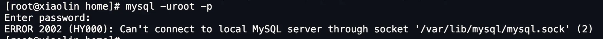
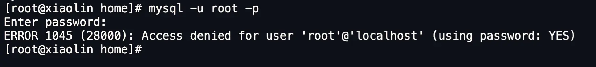
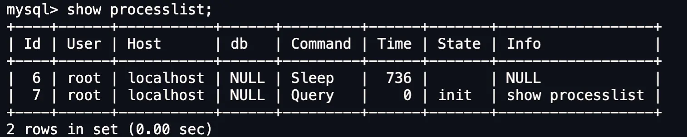

select * from product where id = 1;select查询语句执行过程
mysql架构

server层
负责建立连接\分析\执行SQL
- MySQL 大多数的核心功能模块都在这实现，主要包括连接器，查询缓存、解析器、预处理器、优化器、执行器等。
- 另外，所有的内置函数（如日期、时间、数学和加密函数等）
- 所有跨存储引擎的功能（如存储过程、触发器、视图等)
存储引擎层
负责数据的存储和提取
- 支持 InnoDB、MyISAM、Memory 等多个存储引擎，不同的存储引擎共用一个 Server 层。
- 现在最常用的存储引擎是 InnoDB，从 MySQL 5.5 版本开始， InnoDB 成为了 MySQL 的默认存储引擎。我们常说的索引数据结构，就是由存储引擎层实现的
- 不同的存储引擎支持的索引类型也不相同，比如 InnoDB 支持索引类型是 B+树 ，且是默认使用，也就是说在数据表中创建的主键索引和二级索引默认使用的是 B+ 树索引。
具体流程
连接器
连接Mysql服务:
mysql -h$ip -u$user -p- -h指定mysql服务的ip地址,如果是连接本地的就不需要这个参数
- -u指定用户名,管理员角色名为root
- -p指定密码,但是为了安全不建议在命令行写密码,最好是在交互对话里面输入密码
tcp三次握手:
- mysql是基于tcp协议进行传输的,如果mysql服务没有启动,就会收到报错.
- 如果mysql服务正常运行,完成tcp的建立之后,就要开始验证用户名和密码.如果密码不对也会受到报错”Access denied for user”,然后客户端程序结束.
- 如果都没问题,连接器就会获取该用户的权限,然后保存起来,后续该用户在这个连接里面的任何操作,都会基于连接开始时读到的权限进行权限逻辑的判断
- 所以如果一个用户已经建立了链接,中途管理员修改了该用户权限,也不会影响已经存在连接的权限.修改完成后需要再新建连接才会使用新的权限设置.
如何查看mysql服务器被多少个客户端连接了
可以用show processlist命令来查看,比如
空闲连接是否会一直占用?
空闲连接的最大空闲市场,是由
wait_timeout参数控制的，默认值是 8 小时（28880秒），如果空闲连接超过了这个时间，连接器就会自动将它断开
show variables like ‘wait_timeout’;
mysql> kill connection +6;//手动断开,+6指的是断开id=6的连接
mysql的连接数有限制吗
MySQL 服务支持的最大连接数由 max_connections 参数控制，比如我的 MySQL 服务默认是 151 个,超过这个值，系统就会拒绝接下来的连接请求，并报错提示“Too many connections”。
mysql的连接和http一样,有短连接和长连接的概念.
// 短连接
连接 mysql 服务（TCP 三次握手）
执行sql
断开 mysql 服务（TCP 四次挥手）
// 长连接
连接 mysql 服务（TCP 三次握手）
执行sql
执行sql
执行sql
....
断开 mysql 服务（TCP 四次挥手）
使用长连接的好处就是可以减少建立连接和断开连接的过程，所以一般是推荐使用长连接.但是长连接会占用更多的内存,因为mysql在执行查询过程中临时使用内存管理连接对象,这些连接对象资源只有在连接断开时才会释放.如果占用内存太大,mysql有可能会被系统强制杀掉,发生mysql服务异常重启的现象.
怎么解决长连接占用内存的问题？
有两种解决方式。
第一种，定期断开长连接。既然断开连接后就会释放连接占用的内存资源，那么我们可以定期断开长连接。
第二种，客户端主动重置连接。MySQL 5.7 版本实现了 mysql_reset_connection() 函数的接口，注意这是接口函数不是命令，那么当客户端执行了一个很大的操作后，在代码里调用 mysql_reset_connection 函数来重置连接，达到释放内存的效果。这个过程不需要重连和重新做权限验证，但是会将连接恢复到刚刚创建完时的状态。
至此，连接器的工作做完了，简单总结一下：
- 与客户端进行 TCP 三次握手建立连接；
- 校验客户端的用户名和密码，如果用户名或密码不对，则会报错；
- 如果用户名和密码都对了，会读取该用户的权限，然后后面的权限逻辑判断都基于此时读取到的权限；
#第二步：查询缓存
连接器得工作完成后，客户端就可以向 MySQL 服务发送 SQL 语句了，MySQL 服务收到 SQL 语句后，就会解析出 SQL 语句的第一个字段，看看是什么类型的语句。
如果 SQL 是查询语句（select 语句），MySQL 就会先去查询缓存（ Query Cache ）里查找缓存数据，看看之前有没有执行过这一条命令，这个查询缓存是以 key-value 形式保存在内存中的，key 为 SQL 查询语句，value 为 SQL 语句查询的结果。
如果查询的语句命中查询缓存，那么就会直接返回 value 给客户端。如果查询的语句没有命中查询缓存中，那么就要往下继续执行，等执行完后，查询的结果就会被存入查询缓存中。
这么看，查询缓存还挺有用，但是其实查询缓存挺鸡肋的。
对于更新比较频繁的表，查询缓存的命中率很低的，因为只要一个表有更新操作，那么这个表的查询缓存就会被清空。如果刚缓存了一个查询结果很大的数据，还没被使用的时候，刚好这个表有更新操作，查询缓冲就被清空了，相当于缓存了个寂寞。
所以，MySQL 8.0 版本直接将查询缓存删掉了，也就是说 MySQL 8.0 开始，执行一条 SQL 查询语句，不会再走到查询缓存这个阶段了。
对于 MySQL 8.0 之前的版本，如果想关闭查询缓存，我们可以通过将参数 query_cache_type 设置成 DEMAND。
TIP
这里说的查询缓存是 server 层的，也就是 MySQL 8.0 版本移除的是 server 层的查询缓存，并不是 Innodb 存储引擎中的 buffer pool。
#第三步：解析 SQL
在正式执行 SQL 查询语句之前， MySQL 会先对 SQL 语句做解析，这个工作交由「解析器」来完成。
#解析器
解析器会做如下两件事情。
第一件事情，词法分析。MySQL 会根据你输入的字符串识别出关键字出来，例如，SQL语句 select username from userinfo，在分析之后，会得到4个Token，其中有2个Keyword，分别为select和from：
| 关键字 | 非关键字 | 关键字 | 非关键字 |
|---|---|---|---|
| select | username | from | userinfo |
第二件事情，语法分析。根据词法分析的结果，语法解析器会根据语法规则，判断你输入的这个 SQL 语句是否满足 MySQL 语法，如果没问题就会构建出 SQL 语法树，这样方便后面模块获取 SQL 类型、表名、字段名、 where 条件等等。

如果我们输入的 SQL 语句语法不对，就会在解析器这个阶段报错。比如，我下面这条查询语句，把 from 写成了 form，这时 MySQL 解析器就会给报错。

但是注意，表不存在或者字段不存在，并不是在解析器里做的，《MySQL 45 讲》说是在解析器做的，但是经过我和朋友看 MySQL 源码（5.7和8.0）得出结论是解析器只负责检查语法和构建语法树，但是不会去查表或者字段存不存在。
那到底谁来做检测表和字段是否存在的工作呢？别急，接下来就是了。
#第四步：执行 SQL
经过解析器后，接着就要进入执行 SQL 查询语句的流程了，每条SELECT 查询语句流程主要可以分为下面这三个阶段：
- prepare 阶段，也就是预处理阶段；
- optimize 阶段，也就是优化阶段；
- execute 阶段，也就是执行阶段；
#预处理器
我们先来说说预处理阶段做了什么事情。
- 检查 SQL 查询语句中的表或者字段是否存在；
- 将
select *中的*符号，扩展为表上的所有列；
我下面这条查询语句，test 这张表是不存在的，这时 MySQL 就会在执行 SQL 查询语句的 prepare 阶段中报错。
mysql> select * from test;
ERROR 1146 (42S02): Table 'mysql.test' doesn't exist
这里贴个 MySQL 8.0 源码来证明表或字段是否存在的判断，不是在解析器里做的，而是在 prepare 阶段。（PS：下图是公众号「一树一溪」老哥帮我分析的，这位老哥专门写 MySQL 源码文章，感兴趣的朋友，可以微信搜索关注）

上面的中间部分是 MySQL 报错表不存在时的函数调用栈，可以看到表不存在的错误是在get_table_share() 函数里报错的，而这个函数是在 prepare 阶段调用的。
不过，对于 MySQL 5.7 判断表或字段是否存在的工作，是在词法分析&语法分析之后，prepare 阶段之前做的。结论都一样，不是在解析器里做的。代码我就不放了，正因为 MySQL 5.7 代码结构不好，所以 MySQL 8.0 代码结构变化很大，后来判断表或字段是否存在的工作就被放入到 prepare 阶段做了。
#优化器
经过预处理阶段后，还需要为 SQL 查询语句先制定一个执行计划，这个工作交由「优化器」来完成的。
优化器主要负责将 SQL 查询语句的执行方案确定下来，比如在表里面有多个索引的时候，优化器会基于查询成本的考虑，来决定选择使用哪个索引。
当然，我们本次的查询语句（select * from product where id = 1）很简单，就是选择使用主键索引。
要想知道优化器选择了哪个索引，我们可以在查询语句最前面加个 explain 命令，这样就会输出这条 SQL 语句的执行计划，然后执行计划中的 key 就表示执行过程中使用了哪个索引，比如下图的 key 为 PRIMARY 就是使用了主键索引。

如果查询语句的执行计划里的 key 为 null 说明没有使用索引，那就会全表扫描（type = ALL），这种查询扫描的方式是效率最低档次的，如下图：

这张 product 表只有一个索引就是主键，现在我在表中将 name 设置为普通索引（二级索引）。

这时 product 表就有主键索引（id）和普通索引（name）。假设执行了这条查询语句：
select id from product where id > 1 and name like 'i%';
这条查询语句的结果既可以使用主键索引，也可以使用普通索引，但是执行的效率会不同。这时，就需要优化器来决定使用哪个索引了。
很显然这条查询语句是覆盖索引，直接在二级索引就能查找到结果（因为二级索引的 B+ 树的叶子节点的数据存储的是主键值），就没必要在主键索引查找了，因为查询主键索引的 B+ 树的成本会比查询二级索引的 B+ 的成本大，优化器基于查询成本的考虑，会选择查询代价小的普通索引。
在下图中执行计划，我们可以看到，执行过程中使用了普通索引（name），Exta 为 Using index，这就是表明使用了覆盖索引优化。

#执行器
经历完优化器后，就确定了执行方案，接下来 MySQL 就真正开始执行语句了，这个工作是由「执行器」完成的。在执行的过程中，执行器就会和存储引擎交互了，交互是以记录为单位的。
接下来，用三种方式执行过程，跟大家说一下执行器和存储引擎的交互过程（PS ：为了写好这一部分，特地去看 MySQL 源码，也是第一次看哈哈）。
- 主键索引查询
- 全表扫描
- 索引下推
#主键索引查询
以本文开头查询语句为例，看看执行器是怎么工作的。
select * from product where id = 1;
这条查询语句的查询条件用到了主键索引，而且是等值查询，同时主键 id 是唯一，不会有 id 相同的记录，所以优化器决定选用访问类型为 const 进行查询，也就是使用主键索引查询一条记录，那么执行器与存储引擎的执行流程是这样的：
- 执行器第一次查询，会调用 read_first_record 函数指针指向的函数，因为优化器选择的访问类型为 const，这个函数指针被指向为 InnoDB 引擎索引查询的接口，把条件
id = 1交给存储引擎，让存储引擎定位符合条件的第一条记录。 - 存储引擎通过主键索引的 B+ 树结构定位到 id = 1的第一条记录，如果记录是不存在的，就会向执行器上报记录找不到的错误，然后查询结束。如果记录是存在的，就会将记录返回给执行器；
- 执行器从存储引擎读到记录后，接着判断记录是否符合查询条件，如果符合则发送给客户端，如果不符合则跳过该记录。
- 执行器查询的过程是一个 while 循环，所以还会再查一次，但是这次因为不是第一次查询了，所以会调用 read_record 函数指针指向的函数，因为优化器选择的访问类型为 const，这个函数指针被指向为一个永远返回 - 1 的函数，所以当调用该函数的时候，执行器就退出循环，也就是结束查询了。
至此，这个语句就执行完成了。
#全表扫描
举个全表扫描的例子：
select * from product where name = 'iphone';
这条查询语句的查询条件没有用到索引，所以优化器决定选用访问类型为 ALL 进行查询，也就是全表扫描的方式查询，那么这时执行器与存储引擎的执行流程是这样的：
- 执行器第一次查询，会调用 read_first_record 函数指针指向的函数，因为优化器选择的访问类型为 all，这个函数指针被指向为 InnoDB 引擎全扫描的接口，让存储引擎读取表中的第一条记录；
- 执行器会判断读到的这条记录的 name 是不是 iphone，如果不是则跳过；如果是则将记录发给客户的（是的没错，Server 层每从存储引擎读到一条记录就会发送给客户端，之所以客户端显示的时候是直接显示所有记录的，是因为客户端是等查询语句查询完成后，才会显示出所有的记录）。
- 执行器查询的过程是一个 while 循环，所以还会再查一次，会调用 read_record 函数指针指向的函数，因为优化器选择的访问类型为 all，read_record 函数指针指向的还是 InnoDB 引擎全扫描的接口，所以接着向存储引擎层要求继续读刚才那条记录的下一条记录，存储引擎把下一条记录取出后就将其返回给执行器（Server层），执行器继续判断条件，不符合查询条件即跳过该记录，否则发送到客户端；
- 一直重复上述过程，直到存储引擎把表中的所有记录读完，然后向执行器（Server层） 返回了读取完毕的信息；
- 执行器收到存储引擎报告的查询完毕的信息，退出循环，停止查询。
至此，这个语句就执行完成了。
#索引下推
在这部分非常适合讲索引下推（MySQL 5.6 推出的查询优化策略），这样大家能清楚的知道，「下推」这个动作，下推到了哪里。
索引下推能够减少二级索引在查询时的回表操作，提高查询的效率，因为它将 Server 层部分负责的事情，交给存储引擎层去处理了。
举一个具体的例子，方便大家理解，这里一张用户表如下，我对 age 和 reward 字段建立了联合索引（age，reward）：

现在有下面这条查询语句：
select * from t_user where age > 20 and reward = 100000;
联合索引当遇到范围查询 (>、<) 就会停止匹配，也就是 age 字段能用到联合索引，但是 reward 字段则无法利用到索引。具体原因这里可以看这篇：索引常见面试题(opens new window)
那么，不使用索引下推（MySQL 5.6 之前的版本）时，执行器与存储引擎的执行流程是这样的：
- Server 层首先调用存储引擎的接口定位到满足查询条件的第一条二级索引记录，也就是定位到 age > 20 的第一条记录；
- 存储引擎根据二级索引的 B+ 树快速定位到这条记录后，获取主键值，然后进行回表操作，将完整的记录返回给 Server 层；
- Server 层在判断该记录的 reward 是否等于 100000，如果成立则将其发送给客户端；否则跳过该记录；
- 接着，继续向存储引擎索要下一条记录，存储引擎在二级索引定位到记录后，获取主键值，然后回表操作，将完整的记录返回给 Server 层；
- 如此往复，直到存储引擎把表中的所有记录读完。
可以看到，没有索引下推的时候，每查询到一条二级索引记录，都要进行回表操作，然后将记录返回给 Server，接着 Server 再判断该记录的 reward 是否等于 100000。
而使用索引下推后，判断记录的 reward 是否等于 100000 的工作交给了存储引擎层，过程如下 ：
- Server 层首先调用存储引擎的接口定位到满足查询条件的第一条二级索引记录，也就是定位到 age > 20 的第一条记录；
- 存储引擎定位到二级索引后，先不执行回表操作，而是先判断一下该索引中包含的列（reward列）的条件（reward 是否等于 100000）是否成立。如果条件不成立，则直接跳过该二级索引。如果成立，则执行回表操作，将完成记录返回给 Server 层。
- Server 层在判断其他的查询条件（本次查询没有其他条件）是否成立，如果成立则将其发送给客户端；否则跳过该记录，然后向存储引擎索要下一条记录。
- 如此往复，直到存储引擎把表中的所有记录读完。
可以看到，使用了索引下推后，虽然 reward 列无法使用到联合索引，但是因为它包含在联合索引（age，reward）里，所以直接在存储引擎过滤出满足 reward = 100000 的记录后，才去执行回表操作获取整个记录。相比于没有使用索引下推，节省了很多回表操作。
当你发现执行计划里的 Extr 部分显示了 “Using index condition”，说明使用了索引下推。

总结
执行一条 SQL 查询语句，期间发生了什么？
- 连接器：建立连接，管理连接、校验用户身份；
- 查询缓存：查询语句如果命中查询缓存则直接返回，否则继续往下执行。MySQL 8.0 已删除该模块；
- 解析 SQL，通过解析器对 SQL 查询语句进行词法分析、语法分析，然后构建语法树，方便后续模块读取表名、字段、语句类型；
- 执行 SQL：执行 SQL 共有三个阶段：
- 预处理阶段：检查表或字段是否存在；将
select *中的*符号扩展为表上的所有列。 - 优化阶段：基于查询成本的考虑， 选择查询成本最小的执行计划；
- 执行阶段：根据执行计划执行 SQL 查询语句，从存储引擎读取记录，返回给客户端；
- 预处理阶段：检查表或字段是否存在；将
怎么样？现在再看这张图，是不是很清晰了。

完！